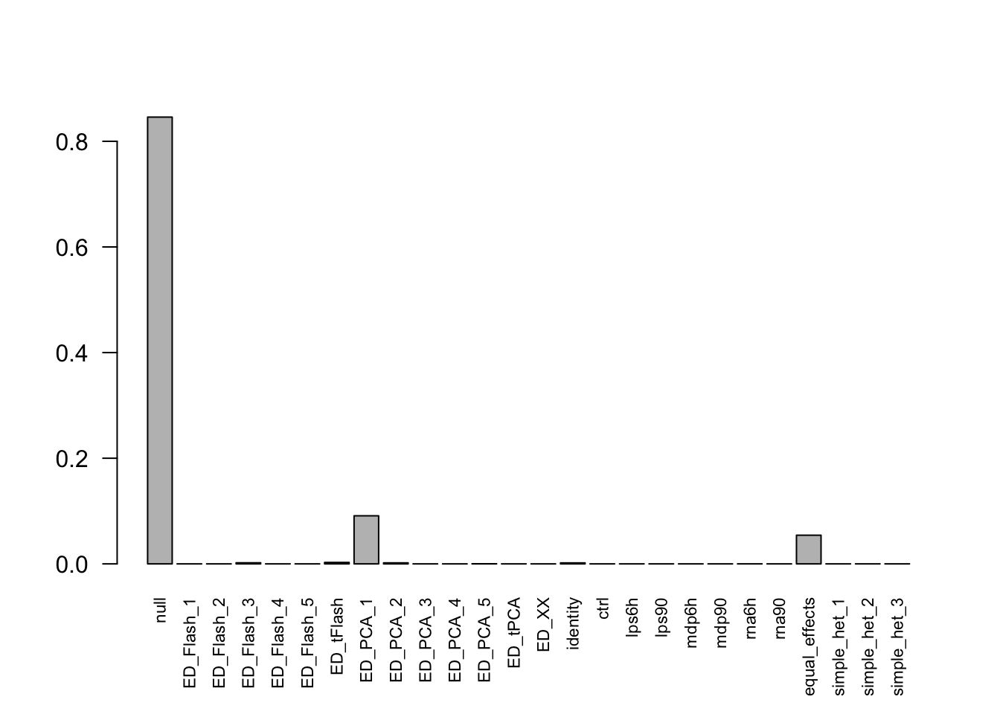

Last updated: 2018-01-07
Code version: eead173
library(mashr)Loading required package: ashrlibrary(corrplot)corrplot 0.84 loadedlibrary(dplyr)
Attaching package: 'dplyr'The following objects are masked from 'package:stats':
filter, lagThe following objects are masked from 'package:base':
intersect, setdiff, setequal, uniondata = readRDS('../data/ImmuneQTLSummary.4MASH.rds')
data$max$se = data$max$beta/data$max$z
data$null$se = data$null$beta / data$null$zPosterior:
resEZ = readRDS('../output/ImmuneEZ.V1.center.mash_model.K10.P5.rds')
resEZ$result = readRDS('../output/ImmuneEZ.V1.center.mash_posterior.K10.P5.rds')Here is a plot of weights learned.
barplot(get_estimated_pi(resEZ), las = 2, cex.names = 0.7)
common = Reduce(intersect, list(get_significant_results(resEZ, conditions=1),
get_significant_results(resEZ, conditions=2),
get_significant_results(resEZ, conditions=3),
get_significant_results(resEZ, conditions=4),
get_significant_results(resEZ, conditions=5),
get_significant_results(resEZ, conditions=6),
get_significant_results(resEZ, conditions=7)))
PM.sign = sign(resEZ$result$PosteriorMean[common,])
inter.ind = which(PM.sign - PM.sign[,1] != 0, arr.ind = TRUE)
inter.ind[order(inter.ind[,1]),] row col
ILMN_1682336_rs11015549 3052 2
ILMN_1682336_rs11015549 3052 3
ILMN_1682336_rs11015549 3052 5
ILMN_1682336_rs11015549 3052 6
ILMN_1682336_rs11015549 3052 7
ILMN_3241870_rs11231805 4156 2
ILMN_3241870_rs11231805 4156 4
ILMN_3241870_rs11231805 4156 6
ILMN_2135984_rs7097009 4303 2
ILMN_2135984_rs7097009 4303 3
ILMN_2135984_rs7097009 4303 5
ILMN_2135984_rs7097009 4303 6
ILMN_2135984_rs7097009 4303 7
ILMN_3240222_rs2945259 4726 2
ILMN_3240222_rs2945259 4726 3
ILMN_3240222_rs2945259 4726 4
ILMN_3240222_rs2945259 4726 5
ILMN_3240222_rs2945259 4726 6
ILMN_3240222_rs2945259 4726 7Among the eQTLs that significant among all treatments, there are 4 of them have effects in different directions in different conditions.
resEZ$result$PosteriorMean[common,][c(3052, 4156, 4303, 4726),] ctrl lps6h lps90 mdp6h
ILMN_1682336_rs11015549 -0.03973959 0.05635243 0.1650882 -0.05175388
ILMN_3241870_rs11231805 -0.04249073 0.08714482 -0.1085200 0.07538729
ILMN_2135984_rs7097009 -0.02122324 0.05439965 0.1610235 -0.02966593
ILMN_3240222_rs2945259 -0.07783494 0.48499809 0.1682393 0.16057701
mdp90 rna6h rna90
ILMN_1682336_rs11015549 0.15140315 0.17302263 0.11384766
ILMN_3241870_rs11231805 -0.05827353 0.07789414 -0.06093627
ILMN_2135984_rs7097009 0.15222085 0.13914109 0.08766780
ILMN_3240222_rs2945259 0.08556055 0.15767849 0.08695253Check the original data:
data$max$beta[common, ][c(3052, 4156, 4303, 4726),] ctrl lps6h lps90 mdp6h
ILMN_1682336_rs11015549 -0.0468871 0.0552021 0.179265 -0.0616376
ILMN_3241870_rs11231805 -0.0519624 0.0727090 -0.114207 0.1655520
ILMN_2135984_rs7097009 -0.0265984 0.0521971 0.175999 -0.0383877
ILMN_3240222_rs2945259 -0.0783185 0.5733190 0.253322 0.1698900
mdp90 rna6h rna90
ILMN_1682336_rs11015549 0.1623500 0.184425 0.1192490
ILMN_3241870_rs11231805 -0.0589191 0.175971 -0.1206210
ILMN_2135984_rs7097009 0.1647460 0.146858 0.0922391
ILMN_3240222_rs2945259 0.0449208 0.202274 -0.0520746According to the thesis, LD among multiple causal SNPs can cause single-SNP analyses to identify eQTL that appear to have strong effects of opposite sign in different tissues. There could be two eQTLs in LD with one another, one of which (A say) has a strong effect in one treatment, and the other of which (B say) has a strong effect in other treatments.
sessionInfo()R version 3.4.3 (2017-11-30)
Platform: x86_64-apple-darwin15.6.0 (64-bit)
Running under: macOS High Sierra 10.13.2
Matrix products: default
BLAS: /Library/Frameworks/R.framework/Versions/3.4/Resources/lib/libRblas.0.dylib
LAPACK: /Library/Frameworks/R.framework/Versions/3.4/Resources/lib/libRlapack.dylib
locale:
[1] en_US.UTF-8/en_US.UTF-8/en_US.UTF-8/C/en_US.UTF-8/en_US.UTF-8
attached base packages:
[1] stats graphics grDevices utils datasets methods base
other attached packages:
[1] dplyr_0.7.4 corrplot_0.84 mashr_0.2-4 ashr_2.1-27
loaded via a namespace (and not attached):
[1] Rcpp_0.12.14 compiler_3.4.3 git2r_0.20.0
[4] plyr_1.8.4 bindr_0.1 iterators_1.0.9
[7] tools_3.4.3 digest_0.6.13 evaluate_0.10.1
[10] tibble_1.3.4 lattice_0.20-35 pkgconfig_2.0.1
[13] rlang_0.1.6 Matrix_1.2-12 foreach_1.4.4
[16] yaml_2.1.16 parallel_3.4.3 mvtnorm_1.0-6
[19] bindrcpp_0.2 stringr_1.2.0 knitr_1.17
[22] rprojroot_1.2 grid_3.4.3 glue_1.2.0
[25] R6_2.2.2 rmarkdown_1.8 rmeta_2.16
[28] magrittr_1.5 backports_1.1.2 codetools_0.2-15
[31] htmltools_0.3.6 MASS_7.3-47 assertthat_0.2.0
[34] stringi_1.1.6 pscl_1.5.2 doParallel_1.0.11
[37] truncnorm_1.0-7 SQUAREM_2017.10-1This R Markdown site was created with workflowr